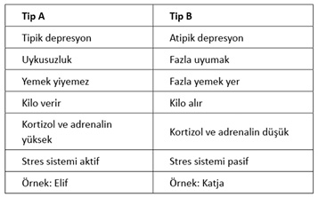

Önsöz
Klinik psikoloji öğrenimi gördüğüm Philipps Üniversitesi, Almanya’nın en güzel şehirlerinden biri olan Marburg’dadır. Tepesindeki görkemli şatosu ve yüzlerce tarihi binasıyla Marburg başlı başına bir müze gibidir. Bundan dolayıdır ki UNESCO’nun dünya mirası listesine alınmıştır. 1527 yılında derebeyi Philipp der Grossmütige von Hessen tarafından kurulan üniversitesi ise dünyanın ilk Protestan üniversitesi olma özelliğini taşıyor. 1527 yılında 90 öğrenciyle açılan okul şu anda 25.000’in üzerinde öğrencisi ve dünya çapında isim yapmış profesörleriyle Almanya’nın en önemli üniversitelerinden biridir.
Bu özelliklerinin yanı sıra Marburg Üniversitesi aynı zamanda solcu geçmişiyle de adından söz ettirmiştir. Orada yaşadığım 1989-1996 yıllarında 68 geleneğinin izini gözlemlemek hâlâ mümkündü. Mesela yaşadığım Pablo Neruda Öğrenci Yurdu, zamanında solcu öğrenciler tarafından işgal edilmiş, kendi kendini yöneten bir yurttu. Üniversitenin “legal” yurtlarına kıyasla son derece büyük ve şık odaları olan bu yurt, hem daha ucuz hem de daha sıcaktı. Yurtta yaşamak isteyen öğrenciler için solcu bir geçmişe sahip olmak ve sol bir hareket ya da sosyal bir aktivitede yer almak önkoşulu vardı.
Odalarımız aynı koridorda olan Elif ve Katja da bir taraftan hukuk fakültesinde öğrenimlerine devam ederken, bir taraftan da Etiyopya’dan gelen mültecilere Almanca dersleri veriyorlardı. Sonradan kendileri de bu insanların kullandığı Amharca dilini öğrenmeye karar verdiler. Gündelik konuşmaları yapacak seviyeye geldikten sonra da bir aylığına Etiyopya’ya gittiler. Amaçları orada bir ay boyunca hem lisan öğrenmek, hem de dinlenmekti. Döndüklerindeyse onları stresli bir sınav dönemi bekliyordu.
Etiyopya’daki gidişat ne yazık ki onların bekledikleri şekilde gelişmemişti. Önce Addis Ababa’da beş gün kalıp bir dil okuluna yazılmışlar, dersler pazartesi günü başlayacağı için de bir otobüse atlayıp iki günlüğüne birkaç yüz kilometre uzaklıktaki başka bir şehre gitmişlerdi. Orada iki gece kaldıktan sonra Addis Ababa’ya geri dönmek istediklerindeyse, otobüsün bir sonraki seferinin üç hafta sonra olacağını öğrenmişlerdi. Ayrıca otobüslerin zaman zaman yollarda saldırıya uğradığı ve bu yüzden üç hafta sonraki otobüsün de şehre geleceğinin garantisi olmadığı ve tek çarelerinin Addis Ababa’ya yürüyerek gitmek olduğu gerçeğiyle yüzleşmişlerdi. Dilleri döndüğünce bütün geri dönüş olanaklarını gözden geçirdikten sonra, tek çarelerinin Addis Ababa’ya yürüyerek dönmek olduğu gerçeğini kabul edip, insanların kendilerine verdikleri bir kilo şeker, birkaç ekşi ekmek ve birkaç litre suyu da sırt çantalarına alıp yollara koyulmuşlardı.
Üç hafta sürecek bu yolculuklarında her günün sonunda bir köy evinde konaklayıp, açlıktan, susuzluktan ve hastalıktan ölüme terk edilmiş insanların yaşamlarına tanıklık edeceklerdi. Her gün bir köyden diğerine yürürken yolda hissettikleri ölüm korkusu, gördüklerini ve yaşadıklarını beyinlerine entegre etmeye çalışmaları, zaman zaman tenha bir dağ başında her an vahşi bir hayvanın saldırısına uğrama endişesi, ruhsal dengelerini o denli bozmuştu ki, birkaç gün sonra otomatikman bir daha birbirlerinin gözlerine bakmamaya karar vermişlerdi. Zira her göz göze geldiklerinde içinde bulundukları çaresiz durumun bilincine varıp bağıra bağıra ağlamaya başlıyorlardı. Neredeyse hiç konuşmadan ve göz temasına girmeden yaptıkları hayatlarının bu en uzun yolculuğunun sonunda üç hafta sonra Addis Ababa’ya varmış ve yine çok fazla konuşmadan ve oyalanmadan Marburg’a geri dönmüşlerdi.
Marburg’a döndüklerinde her ikisi de neredeyse bir deri bir kemik kalmıştı. Bütün ısrarlarımıza rağmen bize başlarına gelenleri anlatmıyor ve yalnızca bitirme sınavlarına hazırlanıyorlardı. Aylarca süren bu sınav maratonunda Elif her an gergindi ve durmadan zayıflıyordu. Gece gördüğü kâbuslar yüzünden zaman zaman geceleri bağırıyor ama buna rağmen konuşmamakta ısrar ediyordu. Katja ise yavaş yavaş eski kilosuna dönmekle kalmamış, aynı zamanda şişmanlamaya başlamıştı. Elif’le karşılaştırıldığında daha sakin, uykuları daha düzenli ve sınavlara hazırlanırken de daha az kaygılıydı. İkisinin de Etiyopya’da bir ay boyunca yaşadıkları yoğun stres ve akabinde aylarca süren sınav stresi aynıydı, ama duruma verdikleri tepki tamamen farklıydı. Biri daha sakin kalıp şişmanlarken, diğeri devamlı gergin bir halde zayıflıyordu. Belli ki yaşadıkları stres ikisinde farklı bir etki yaratmıştı.
İnsanların yaşadıkları stresin yeme davranışını nasıl etkilediğine yönelik yapılan araştırmalar, Elif ve Katja’nın yaşadıklarının gayet sıradan bir olgu olduğunu gösteriyor. Konuyla ilgili İngiliz bilim insanlarının üniversiteye yeni başlamış bir grup öğrenciyle yaptığı araştırmalar, hayatta yeni bir sayfa açmış olmanın yarattığı stresin, öğrencilerin yüzde 40’ında zayıflığa, yüzde 40’ında şişmanlığa yol açarken, yüzde 20’sini ise etkilemediğini gösteriyor.
Peki ama insanlar aynı strese neden bu kadar farklı tepki veriyor? Neden insanların bir kısmı stresli durumlarda daha az yemek yiyip zayıflarken, diğer bir kısmı fazla yiyip şişmanlıyor ve bir kısmı da durumdan etkilenmiyordu? Konuyu yakından inceleyen İngiliz bilim insanları kronik stresin depresyona yol açtığı görüşünde birleşiyor. İnsanlar depresyona girdiklerinde iki farklı durum sergilerler: Tipik depresyon yaşayanlar uyku sorunu yaşar, yemek yiyemez ve zayıflar. Bu insanların kan değerlerine bakıldığında yüksek miktarda kortizol hormonuyla karşılaşılır. Kortizol hormonunun yüksek olması, kişinin yoğun stres yaşadığının ve son derece aktif bir stres sistemine sahip olduğunun göstergesidir.
Atipik depresyon yaşayanlarsa fazla yemek yer, kilo alır, fazla uyur ve sosyalleşemezler. Bu insanların stres sistemleri aktif değildir ve kanlarındaki kortizol oranı düşüktür. Tipik depresyon geçirenlere A grubu insanları, atipik depresyon geçirenlere ise B grubu insanları dersek, Elif’in A grubuna, Katja’nın ise B grubuna dahil olduğu sonucunu çıkarabiliriz. C grubunda yer alan yüzde 20 ise, belli ki ya strese daha dayanıklı karakterlerden oluşur ya da aldıkları ailevi ve sosyal destekten dolayı stres yaşamaz.

Zayıflığın revaçta olduğu ve kiloluların çağımızın yeni siyahları ilan edildiği günümüz dünyasında tipolojimizi kendi özgür irademizle seçme şansımız olsaydı, eminim ki insanların büyük çoğunluğu A grubuna dahil olmak isterdi. Ama her şeyde olduğu gibi burada da madalyonun diğer yüzü var. Zira A grubunda olanlar kronik stres yaşadıklarında yemekten kesilip zayıflıyorlar ama, bunun bedelini de kanlarındaki yüksek miktarda stres hormonları ve bununla bağlantılı psikolojik ve fiziksel rahatsızlıklarla ödüyorlar. Bunun yanı sıra kaybetme durumlarını daha az tolere edebiliyor, emekleri istediği sonucu vermediğinde tipik depresyona girebiliyorlar. B grubundaki insanlar ise hayattaki zorlukları daha iyi tolere ediyor ve strese karşı daha dayanıklı oluyorlar. Yani aslında her iki grup da kendi “tarzında” kronik stresin bedelini ödüyor. Biri depresif oluyor, diğeri ise kilolu. Adorno’nun deyimiyle, “yanlış hayat doğru yaşanmıyor.”
Kilo diktatörlüğü yaşanan günümüzde her ne kadar insanların büyük bir çoğunluğu bütün negatif olgulara rağmen Elif’in yerinde olmayı tercih etse de, hangi gruba ait olduğumuzu belirleyen faktörler son derece karmaşık. Bilim insanları kronik strese verdiğimiz tepkinin kısmen karakterimizle, kısmen genetiğimizle ilgili olduğunu, kısmen de kalıtımsal olduğunu iddia ediyorlar.
Bir önceki kitabım Korkma Ye! de diyetlerin insanları zayıflatmadığı gibi hastalandırdığını ve kilolu insanların yeme bağımlılığıyla nasıl baş edeceklerini irdelemiş ve pratik çözüm önerilerinde bulunmuştum. Şimdi ise size, insanları yeme bağımlılığına iten psikonörolojik olguları anlatıp, soruna daha derinden bir çözüm bulmanıza yardımcı olmaya çalışacağım.
Bu kitapta Berlin Vata Akademisi’nde “Vata Stres Yönetimiyle İncelmek” başlığı altında geliştirdiğimiz stres yönetimiyle tanışacaksınız. Amacımız, sadece insanların sağlıklı beslenmeleri değil, aynı zamanda sağlıklı bir yaşam sürdürmeleri. Yiyip içtiklerimiz ve bedensel hareket sağlığımızın yalnızca bir bölümünü teşkil eder. Oysa kendimizle olan ilişkimiz (psikolojik sağlık), diğerleriyle olan ilişkimiz (sosyal sağlık) ve varoluşla olan ilişkimiz (spiritüel sağlık) de sağlıklı yaşamın önemli öğeleridir. Bu anlamda sağlıklı beslenen, haftada birkaç kez spor yapan, kan değerleri ve kilosu “normal” olan kişi, kendisi ve çevresiyle ilişkileri bozuk olduğunda ve varoluşun labirentinde kaybolduğunda, ne yazık ki sağlıklı değildir. O kişi yalnızca bedensel olarak sağlıklıdır, ama diğer boyutlarda sağlıklı değildir. Ve diğer alanlardaki bu “sağlıksızlık” er ya da geç bedene de yansır. Hepimiz, sigara ve alkol kullanmadığı, her mevsim geçişinde detoks yaptığı, yediği ve içtiğine dikkat ettiği ve düzenli spor yaptığı halde genç yaşta kalp krizinden ya da kanserden ölen insanları biliriz. Ve bu tür olaylarla karşılaştığımız her durumda ilkönce sağlıkla ilgili bütün bildiklerimizi sorgular, ama sonradan aynen o bildiklerimizi tekrar ederek yaşamaya devam ederiz. Oysa bu tür olaylar bize bildiklerimizi yeniden sorgulama imkânı sunar.
Vata Stres Yönetimiyle İncelmek, kişinin gerçek anlamda yaşam biçimini değiştirmesi anlamına gelir. Bu da kişinin yalnızca bedensel olarak değil, psikolojik, sosyal ve spiritüel anlamda sağlıklı bir yaşama adım atmasıyla, yani yaşamla ve varoluşla ilgili stres yönetimi yapmasıyla mümkündür. Dolayısıyla bu kitap size nasıl hızlı bir şekilde kilo vereceğinizi vaat etmiyor. Eğer yaptığınız onlarca ve belki de yüzlerce diyete rağmen hâlâ sihirli bir değnek arayışındaysanız, size bu kitaba vereceğiniz zamanı başka bir uğraşa ayırmanızı öneririm. Zira zayıflamak için hızlı, sağlıklı ve tehlikesiz bir metot yoktur. Ama eğer sizi yeme bağımlılığına iten nedenlerle ilgili bilgi edinmek ve bunlarla mücadele etmek, ufkunuzu açmak ve kiloya yol açan şeyin bedenimizin değil, beynimizin metabolizması olduğunu öğrenmek istiyorsanız, bu kitap size kilo sorununuzu çözmekte yardımcı olacaktır.
Bu kitapta kilo sorununun bir disiplin ya da irade konusu olmadığını, tam tersine toplumsal bir sorun olduğunu göreceksiniz. İnsanların disiplinsizlik ya da iradesizlikten değil, fakirlikten ya da fakirleşme korkusu yüzünden şişmanladıklarını öğreneceksiniz. İşini kaybetmek ya da kaybetme korkusu yaşamak, aile hayatının beraberinde getirdiği zorluklarla başa çıkamamak, çocuk eğitiminin zorlukları, yalnızlık, işyerinde mobbing kurbanı olmak, terk edilmek, bir anda hem annelik hem babalık yapmak, iş hayatının beklentileri, yıllarca mutsuz bir evliliği sürdürmek, aile fertlerinden birinin ölümcül ya da kronik bir hastalığa yakalanması, yani psikososyal bütün streslerin beynimizin metabolizmasını bozarak şişmanlamamıza yol açtığını öğreneceksiniz. Stresin psikososyal olması demek, bu stresi diğer insanlarla olan ilişkimizde yaşamamız anlamına gelir.
“Egoist Beyin” teorisi kapsamında Almanya’da Achim Peters ve grubu tarafından yapılan bilimsel araştırmalar, şişmanlığa yol açan faktörün psikososyal stres olduğunu gösteriyor. Yani stres yönetimimiz ile kilomuz arasında doğrudan bir bağlantı var: Beyin ne kadar çok stres yaşıyorsa, beden de o denli şişmanlıyor. Ve bedene uyguladığımız diyet tarzı her stresli durum, beyni de strese sokarak daha fazla kilo almamıza neden oluyor. Bu kitapta sizi yeme bağımlılığından kurtaracak ve yavaş yavaş ideal kilonuza getirecek yegâne yolun yaşadığınız stresi daha iyi yöneterek beyninizin stres sistemini rahatlatmak olduğunu göreceksiniz.
Son olarak da bu kitabın yalnızca şişman insanlara yönelik olmadığının altını çizmek istiyorum. Kronik stres yalnızca B grubu insanlarını şişmanlatırken, A grubu insanlarında ise bir taraftan zayıflamaya yol açarken, bir taraftan kanlarındaki stres hormonlarının devamlı yüksek seviyede bulunmasına neden oluyor. Kanda kronik bir şekilde yüksek miktarda kortizol hormonunun bulunması ise pek çok hastalığa davetiye çıkarıyor. Dolayısıyla günümüzde bir tek şişman insanların değil, zayıf insanların da stresle başa çıkmayı öğrenmeleri gerekiyor. Bu anlamda Vata Stres Yönetimiyle İncelmek günümüzün stresli koşullarında yaşayan herkes için geliştirilmiştir.
İyi bir stres yönetimi dileğiyle!